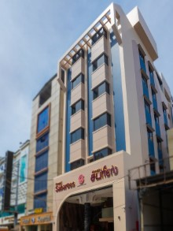
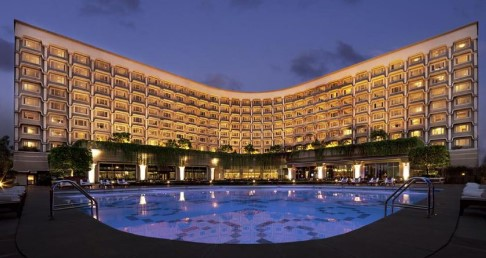
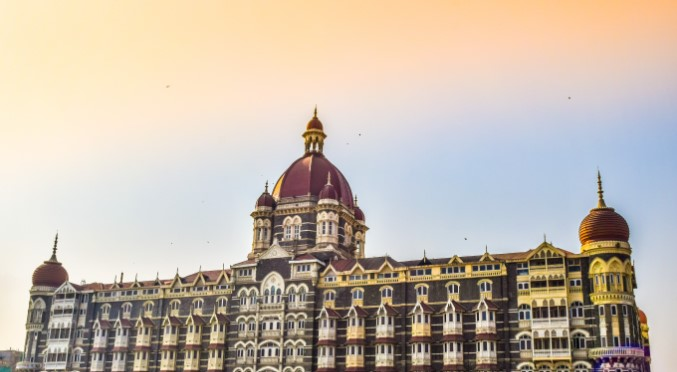
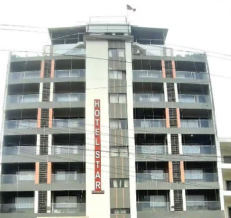

| Hotels |
Description |
Price |
Distance From City Attraction |
| Hotel Grand Sabarees |
A nice comfortable stay with clean rooms and in a good location. Hotel Grand Sabarees is conveniently
located with close proximity to the Railway station, good vegetarian restaurants and Meenakshi temple. The
rooms are very well maintained and clean. The pricing is very reasonable.
|
₹2500.00 |
The hotel is 1.1 km form Meenakshi Amman Temple |
| Hotel Taj Palace |
Spread over six acres of lush gardens, the iconic Taj Palace, New Delhi holds a prominent place in the
capital's prestigious Diplomatic Enclave. Synonymous with timeless luxury and unmatched hospitality, the
hotel offers modern facilities seamlessly infused with epitomizing elements of exquisite Indian art.
|
₹310.35 |
This hotel is 14.7 km from red fort (Delhi) |
| Hotel Taj Mahal |
The Taj Mahal Palace is a heritage, five-star, luxury hotel in the Colaba area of Mumbai, Maharashtra,
India, situated next to the Gateway of India. Built in the Indo-Saracenic style, it opened in 1903 as the
Taj Mahal Hotel and has historically often been known simply as "The Taj".
|
₹ 14,868 |
This place is 400.0 m from Gateway Of India(Mumbai) |
| Hotel Star Bodh Gaya |
Hotel Star Bodh Gaya offers a range of spacious and well-appointed rooms to cater to the needs of every
traveler. Choose from their Deluxe Double or Twin rooms, spanning an impressive 400 square meters and
featuring either a plush King Bed or a cozy Single Bed.
|
₹ 2500 |
This place is 1.8 km from Bodh Gaya |